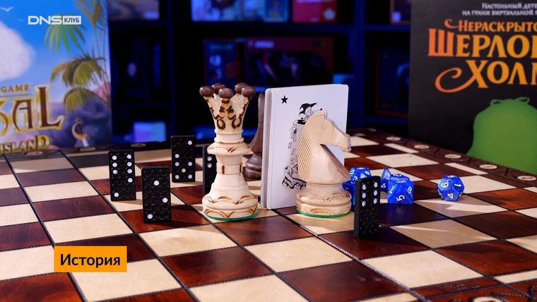
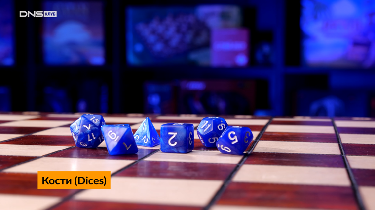

Настольные игры — популярный способ совместного времяпрепровождения, количество поклонников которого растет с каждым годом. Дело в том, что настольные игры разнообразны, увлекательны и связаны с живым общением, которого нам нередко не хватает. При этом настолки радикально отличаются друг от друга по принципу построения, так называемым игровым механикам. С тем, как устроены и работают настольные игры мы сейчас и разберемся.
Настольные игры — популярный способ совместного времяпрепровождения, количество поклонников которого растет с каждым годом. Дело в том, что настольные игры разнообразны, увлекательны и связаны с живым общением, которого нам нередко не хватает. При этом настолки радикально отличаются друг от друга по принципу построения, так называемым игровым механикам. С тем, как устроены и работают настольные игры мы сейчас и разберемся.
Казалось бы, на вопрос, из чего состоят настольные игры, следует отвечать: из игрового поля, кубиков, фишек, карточек. Но не все так просто. Поле, фишки, кубики и карточки — это, конечно, важно. Но на самом деле это только внешний антураж. А мы говорим о том, как устроены игры внутри. Тогда выходит, что настольная игра в целом состоит из следующих элементов: игровой механики, сеттинга, сюжета и атмосферы.
Эти четыре элемента что-то вроде «трех китов», на которых и строятся все настолки. При этом далеко не всегда эти элементы используются в полном объеме. Есть игры, в которых именно сеттинг и сюжет являются основными моментами (в основном это стратегические, ролевые и приключенческие игры), а есть и такие, в которых основное — это механика, а сюжета минимум или вообще нет, как в домино.

Чтобы понять, как и почему именно так устроены настольные игры, следует немного обратиться к их истории. Первые настольные игры представляли собой абстрактные развлечения. Это была идея в чистом виде без всяких сеттингов и сюжетов. Причем появились они довольно давно. Можно с уверенностью говорить о том, что в настольные игры играли как минимум с IV века до нашей эры. К одним из первых настольных игр можно отнести, например, кости. Чуть позже появились прототипы домино и шахмат.
Во многих современных настолках применяются те или иные элементы первых игр. Карты, формирование игрового поля по ходу игры, рассчет, тактика или простая случайность — все это вы найдете до сих пор.

Самый наглядный пример игр, основанных на случайности — кости. Игроки бросают их, у кого выпало большее число, тот и победил. Кости — квитэссенция случайности и везения. Причем механика этой игры активно используется до сих пор. И не только в казино, но и во множестве настолок. Особенно в играх, которые среди фанатов настолок принято называть «америтреш». Их механика не требует особенных размышлений, все зависит от того, как лягут брошенные кубики. Почему-то принято считать, что эта игровая механика популярна в Америке.